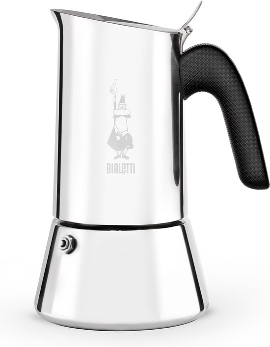

Our scores
- Design & build quality8.8/10
- Coffee taste8.5/10
- Ease of use8.5/10
- Maintenance9.0/10
- Value for money8.2/10
- Suitable for beginners8.8/10
Verdict
The Bialetti Venus is the ideal choice for those who have an induction hob or prefer stainless steel. It combines the classic moka ritual with modern compatibility and an elegant design. The coffee is bold and smooth, with less bitterness than aluminium models. A reliable and durable upgrade for modern kitchens.
The Bialetti Venus is the stainless steel variant of the classic moka pot and Bialetti's answer to modern induction kitchens. The design is slimmer and more rounded than the Moka Express, the body is entirely made of 18/10 stainless steel and (except for the smallest 2-cup model) works on all heat sources, including induction.
For many users, this is "the logical upgrade": you retain the traditional Italian moka ritual, but in a more durable, more elegant and more compatible form.
Design & build quality
The Venus has a flowing cylindro-conical shape with soft lines and a polished stainless steel body. The heat-resistant plastic handle is ergonomically designed to stay cool and comfortable during pouring. The newer "New Venus" versions have a thicker base (about 20% thicker) for better thermal conductivity on induction, an improved lid and a redesigned spout.
Key points:
- Material: 18/10 stainless steel, food-safe, polished and highly corrosion-resistant;
- Sizes: typically 4, 6 and 10 cups (approx. 170–500 ml, small moka cups of ±50 ml each);
- Compatible with gas, electric, ceramic glass and induction (except the 2-cup model).
Reviews frequently praise the Venus for its "elegant" and "beautiful" look and the fact that it appears less "rustic" than a classic aluminium moka pot.
Coffee taste: smooth, bold and less bitter
In terms of taste, the Venus performs very well for a stainless steel moka pot. Tests and user feedback describe deep, rich coffee with a powerful but not excessively bitter profile, especially when using moderate heat and the right grind.
Trends observed in reviews:
- the coffee is described as bold and complex, with more body than filter coffee but slightly gentler than some aluminium moka pots;
- with the right technique (grind slightly finer than for filter, no tamping, medium-low heat, remove from heat at the first sputtering sounds), bitterness is well controlled;
- compared to the Aeropress or filter coffee, some users find the Venus cups more flavourful and consistent.
In summary: you get the typical Italian moka style — strong, concentrated — but with a pleasant, rounded finish if you pay a little attention to your brewing method.
Ease of use: calm ritual, also on induction
The Venus is used like any classic moka pot: water below the valve, fill the filter basket with ground coffee, screw on the top and place on the heat. On induction, it is often recommended to start at medium power and optionally use pre-heated water, so the moka pot spends less time on the hob and the coffee is less "cooked".
Practical benefits noted in reviews:
- meditative and simple ritual: several testers describe it as a calm and relaxing way to prepare coffee, far from the noise of electric machines;
- drip-free spout on the New Venus makes pouring neater and more convenient;
- stable stainless steel base on induction and other hobs, less prone to warping than thin aluminium.
A minor caveat: the smallest 2-cup version does not work on induction, which can sometimes cause confusion. For induction, it is best to choose at least the 4-cup model.
Maintenance & durability
A major advantage of the Venus over aluminium models is maintenance: stainless steel is forgiving and can, according to manufacturer recommendations, sometimes even go in the dishwasher (though hand washing remains recommended for a long lifespan and maximum shine).
Durability features:
- 18/10 stainless steel is corrosion-resistant and retains its lustre for a long time with normal use;
- the thicker base of the New Venus makes the moka pot more robust and improves heat distribution;
- the rubber gasket and filter are available as spare parts, making it easy to continue using the moka pot for many years.
For optimal maintenance, experts recommend:
- rinse thoroughly after each use and remove coffee residue;
- avoid aggressive abrasives to limit scratches on the stainless steel;
- check and clean the valve from time to time, especially with intensive use.
Bialetti Venus
See price on Amazon →| Brand | Bialetti |
|---|---|
| Model | Venus |
| Material | Stainless steel (18/10) |
| Capacity | 4 cups |
| Heat source | Induction, gas and electric |
| Maintenance | Hand wash with hot water, regular gasket inspection |
Who is the Bialetti Venus a good choice for?
The Venus is particularly a good choice if:
- you want a moka pot that works on induction while also being usable on other heat sources;
- you prefer stainless steel over aluminium, both for health and durability reasons;
- you like a more modern and elegant design than the classic octagonal shape.
The Venus is less suitable if:
- you are primarily looking for the lowest price (an aluminium Moka Express is cheaper);
- you need a very large capacity at once — the 10-cup model is usable, but for really large quantities other solutions are more practical;
- you absolutely do not want to adjust your brewing method; although the Venus is fairly forgiving, a little attention to grind and heat is always worthwhile.
Pros and cons at a glance
Pros
- Fully made of 18/10 stainless steel, durable and induction compatible (from 4 cups).
- Modern, elegant design that looks great in the kitchen.
- Rich, smooth coffee with plenty of body and little bitterness with the right technique.
- Relatively easy maintenance; tolerates dishwasher according to some manufacturers (hand washing preferred).
Cons
- More expensive than a classic aluminium Bialetti Moka Express.
- The 2-cup version is not induction compatible, which can cause confusion.
- Like all moka pots, technique is still sensitive to heat adjustment: too high a heat quickly produces more bitter coffee.
The Bialetti Venus is one of the best choices if you are looking for a stainless steel moka pot that also works on induction. It combines a modern, elegant design with solid build quality and rich, smooth coffee, making it the ideal everyday moka pot for those who want to upgrade from the classic aluminium moka pot.
Frequently asked questions
Does the Bialetti Venus work on induction?
Yes, that is one of the main reasons to choose this model. The Venus is designed for modern hobs and is often chosen as an alternative to aluminium models that do not support induction.
Is the Venus coffee stronger or milder than an aluminium moka pot?
In practice, many users perceive the extraction as slightly gentler and more balanced. This model is therefore very well suited for daily use, but perhaps a little less so for those explicitly seeking maximum intensity.
Is stainless steel better than aluminium?
That depends on your priorities. Stainless steel is better for maintenance, durability and induction compatibility, while aluminium often has a more traditional look and heats faster.
Is the higher price of the Venus justified?
For users with induction or those looking for an easy-maintenance model, generally yes. If you are primarily looking for an affordable entry-level model, aluminium models are often more attractive.
About the author
Timo Dekker
Timo started behind the bar of an Amsterdam café and became fascinated by how small differences in grind or heat can transform a cup of coffee. He now works primarily from home, testing Italian moka pots on gas, induction and electric hobs, from entry-level models to pricier design pieces. For Italian Moka Pot, he brings together these experiences in practical reviews and guides, so you know what a moka pot really does on your stove, not just in the product photo.